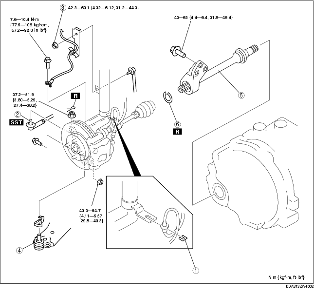
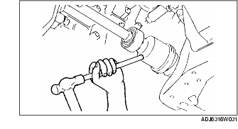
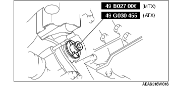
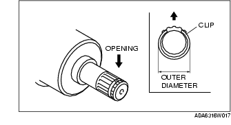

Joint shaft removal/installation
- • Performing the following procedures without first removing the ABS wheel-speed sensor may possibly cause an open circuit in the wiring harness if it is pulled by mistake. Before performing the following procedures, remove the ABS wheel-speed sensor (axle side) and fix it to an appropriate place where the sensor will not be pulled by mistake while servicing the vehicle.
1. Remove the ABS wheel-speed sensor. (See FRONT ABS WHEEL-SPEED SENSOR REMOVAL/INSTALLATION.)
2. Drain the transaxle oil. (See TRANSAXLE OIL REPLACEMENT [F35M-R].) (See AUTOMATIC TRANSAXLE FLUID (ATF) REPLACEMENT [FN4A-EL].)
3. Remove in the order indicated in the table.
4. Install in the reverse order of removal.

|
1
|
Clip
(See Clip Installation Note)
|
|
2
|
Tie-rod end
(See Tie-rod End Removal Note)
|
|
3
|
Stabilizer control link (upper side)
|
|
4
|
Front lower arm ball joint
|
|
5
|
Joint shaft
(See Joint Shaft Removal Note)
|
|
6
|
Clip
(See Clip Installation Note)
|
Joint Shaft Removal Note
1. Disconnect the drive shaft (RH) from the joint shaft by tapping the transaxle side outer ring lightly with a brass bar and hammer.

2. Disconnect the joint shaft bracket from the cylinder block and remove the joint shaft.
- • The sharp edges of the joint shaft can slice or puncture the oil seal. Be careful when removing the joint shaft from the transaxle.
3. Install the SST to the transaxle after the joint shaft is removed.

Clip Installation Note
1. Install a new clip onto the joint shaft with the opening facing upward.
2. After installation, measure the outer diameter.

Outer diameter